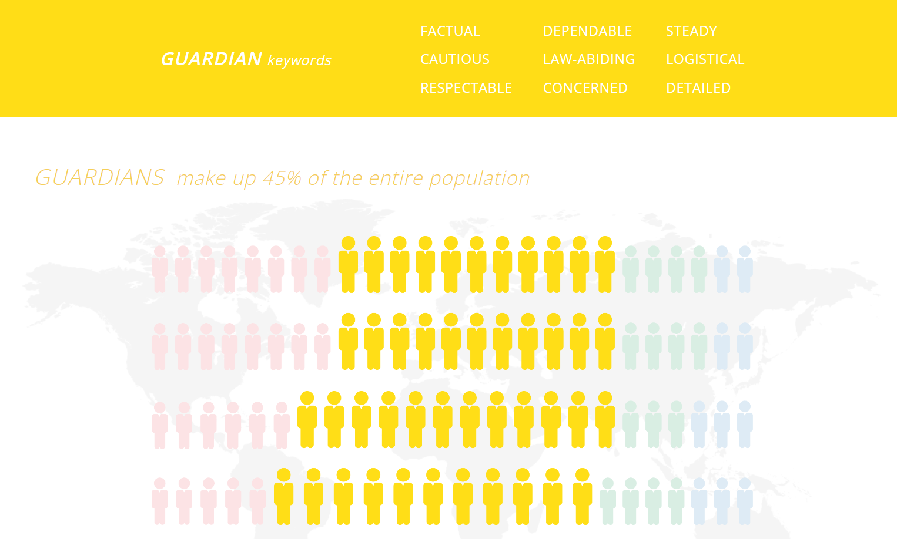
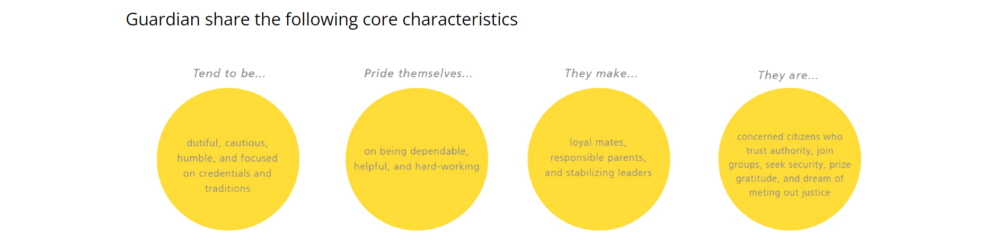

Zoë-Marie Shaw
- (876)385-4190
- shawzoemarie@gmail.com
- Dr. Herbert Swaby Ave, Tower Isle, St.Mary
- ID Num: 2205906
- Faculty of Engineering and Computing
- University of Technology, Jamaica
© 2023 Zoe-Marie Shaw
There is some validity to personality tests in general, and the Keirsey test in particular. The result of this test, one of four temperaments, is entirely determined by the responses to the questions. These responses cannot be verified because they are sent online, thus in order to provide an accurate response, the user must be totally honest and self-aware. Therefore, if a user wants to achieve a particular result or present themselves falsely when answering the questions, the test would assume these answers are the truth and generate a result based on this. When providing an honest response, there may be questions that the user does not understand, several responses that they believe accurately describe them, or the questions may not be adequate to classify some individuals. There will always be outliers even though the majority of people could receive findings that they can relate to.
In my particular case, I believe my result is completely valid. The result I received from the Keirsey Temperament Test was that of 'Guardian'. It states that these types of people tend to be dutiful, cautious, humble and focused on credentials and traditions, pride themselves in being dependable, helpful and hardworking, make loyal mates, responsible parents and stabilizing leaders and are concerned citizens who trust authority, join groups, seek security, prize gratitude and dream of meting out justice. Although I do not have experience in a few of the aforementioned areas, I identify with the ones that I do.
